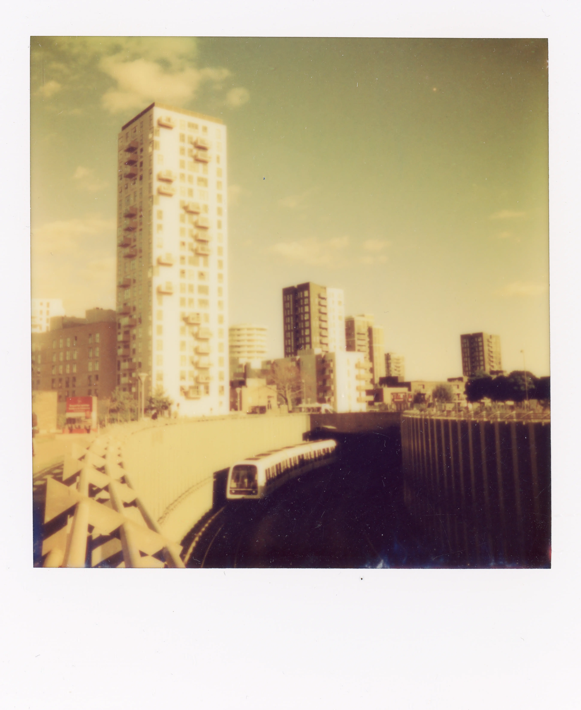

Konkurrence
Instant Ugen var noget af en succes med over 784 bidrag. Så det var ikke nemt at finde en vinder.
Efter et par lange, men spændende dage, blev dommerne enige om vinderen og de 6 nominerede.

Vinderen

03 - Amager Strand
Navn: Stefan Grage
Beskrivelse/historien bag:
Fra denne vinkel ligner København en storby. Taget med et Polaroid Now+ Gen 2, med et gult filter.
De nominerede
08 - Karlstrup & kaffe
Navn: Stefan Grage
Beskrivelse/historien bag: Den smukke natur i en tidligere kalkgrav med et twist af kaffe. Polaroidet blev lagt i blød i kaffe i et par uger. Det gav en flot kulør. Kamera: Polaroid-flip.
Navn: Stefan Grage
Beskrivelse/historien bag: Den smukke natur i en tidligere kalkgrav med et twist af kaffe. Polaroidet blev lagt i blød i kaffe i et par uger. Det gav en flot kulør. Kamera: Polaroid-flip.


01 - Amager Fælled
Navn: Stefan Grage
Beskrivelse/historien bag: Et lille snapshot fra Amager Fælled, en stor skov i den sydvestlige del af København, Danmark. Taget med et Lomomatic Square.
Navn: Stefan Grage
Beskrivelse/historien bag: Et lille snapshot fra Amager Fælled, en stor skov i den sydvestlige del af København, Danmark. Taget med et Lomomatic Square.
05 - 2 x Ørestad
Navn: Stefan Grage
Beskrivelse/historien bag: En dobbelteksponering fra mit nabolag, Ørestad. Taget med et Lomomatic Square.
Navn: Stefan Grage
Beskrivelse/historien bag: En dobbelteksponering fra mit nabolag, Ørestad. Taget med et Lomomatic Square.


02 - Amager Forbrænding
Navn: Stefan Grage
Beskrivelse/historien bag: Jeg ville give min højre arm for en smøg. Taget med et Lomomatic Square.
Navn: Stefan Grage
Beskrivelse/historien bag: Jeg ville give min højre arm for en smøg. Taget med et Lomomatic Square.
06 - Laserup Strand
Navn: Stefan Grage
Beskrivelse/historien bag: For koldt til at tage en dukkert. Så jeg tog et billede i stedet. Polaroidet gav et forfærdeligt magenta farveskær, men jeg endte med at kunne lide det. Taget med et Polaroid Now+ gen 2 og en i-Type-film, som jeg sandsynligvis opbevarede forkert.
Navn: Stefan Grage
Beskrivelse/historien bag: For koldt til at tage en dukkert. Så jeg tog et billede i stedet. Polaroidet gav et forfærdeligt magenta farveskær, men jeg endte med at kunne lide det. Taget med et Polaroid Now+ gen 2 og en i-Type-film, som jeg sandsynligvis opbevarede forkert.